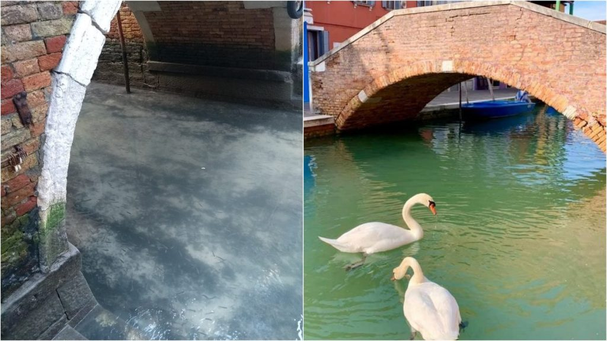
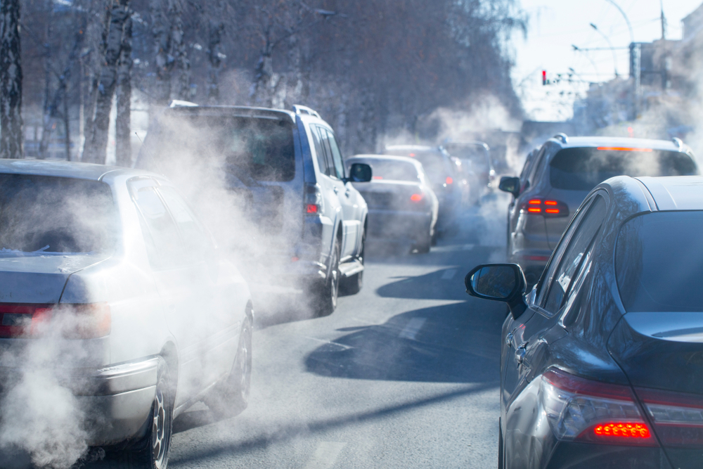

A pandemia de COVID-19 deixou milhões de contágios e centenas de milhares de falecidos, além de confinar a maioria da população mundial, mas também reduziu consideravelmente as emissões diárias de CO2, — um 17 % de acordo com um relatório publicado pela revista Nature Climate Change —. A dúvida que surge agora é se uma vez superada a crise serão mantidos os compromissos assumidos na luta contra as mudanças climáticas, e tudo parece indicar que sim.
Canais de Veneza, antes e depois da Pandemia
A paralisação industrial e do transporte decorrentes do confinamento provocou uma espetacular queda das emissões de gases de efeito estufa (GEE). A International Energy Agency (IEA) aponta na mesma direção do relatório da Nature Climate Change, pois estima que este ano ocorra a maior queda de emissões de CO2 de todos os tempos: 8 %, seis vezes superior à ocasionada pela crise econômico-financeira de 2008.
Por outro lado, a NASA mostrou imagens de satélite surpreendentes que refletem uma redução impressionante nas emissões de dióxido de nitrogênio (NO2) — cuja principal fonte são os automóveis — em comparação com a época anterior ao confinamento. Em termos ambientais esses dados são positivos — mas não podemos esquecer que segundo a OMS (Organização Mundial da Saúde) a poluição atmosférica mata 4,2 milhões de pessoas por ano —, mas alguns especialistas temem que, uma vez finalizado o confinamento, as emissões batam recordes históricos de recuperação.
Automóveis emitindo CO2